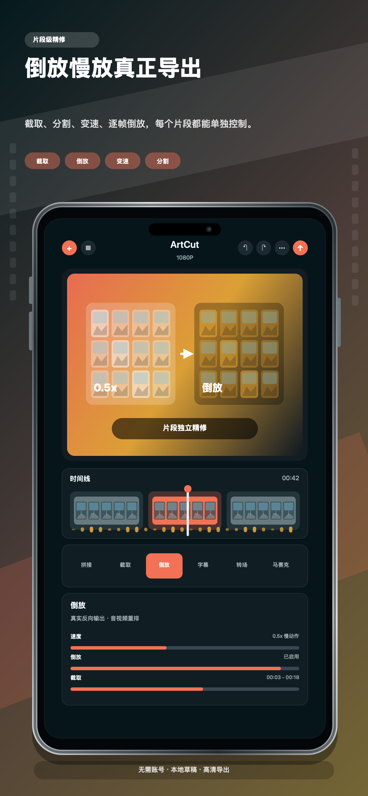
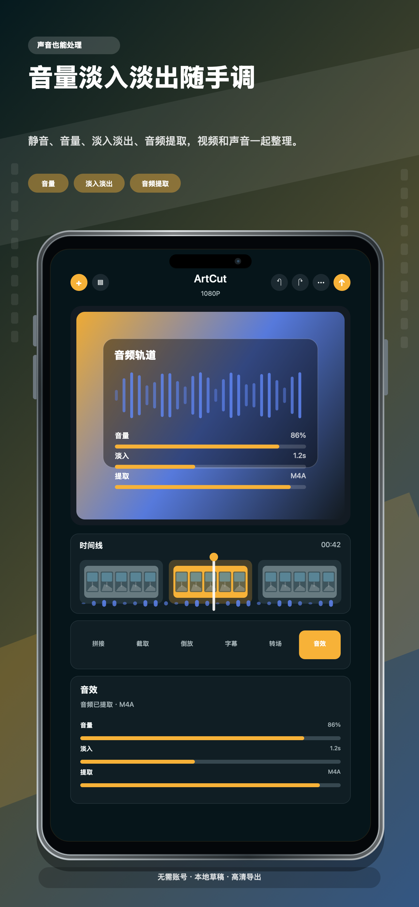

1
创建项目
- 新建项目后，从照片或文件导入视频和图片。
- 只有在导入素材或保存导出视频时才需要授权照片权限。
- 草稿、生成的渲染文件、提取音频、字幕结果和缓存默认保存在设备本地。

2
时间线剪辑
- 按顺序排列片段，然后进行截取、分割、倒放、旋转、翻转、裁剪、加边框或变速。
- 使用转场、画中画、贴纸、标题、涂鸦和马赛克区域完成画面设计。
- 导出前建议预览，尤其是做过变速、倒放和叠加效果后。

3
字幕、音频和导出
- 只有当你主动启动字幕生成时，自动字幕才会使用 Apple 语音识别框架。
- 可以静音、调节音量、添加淡入淡出、提取音频，或把背景音和原视频声音组合。
- 选择导出质量，等待设备端渲染完成，然后保存或通过 Apple 系统服务分享。

4
存储和版本
- 当存储空间紧张时，可使用缓存清理工具删除生成的渲染和临时文件。
- ArtCut Free 会在 ATT 状态确定后，在剪辑和导出流程中展示 Yandex/AdMob Banner、原生/信息流、插屏和开屏广告。
- ArtCut Paid 是付费下载版本，无广告，也不会初始化广告 SDK。会员或高级模板订阅应以实际提交版本为准，启用后再作为当前功能描述。

如需帮助，请联系 balamanigill@gmail.com.
本地媒体剪辑。免费版会在 ATT 状态确定后使用 Yandex Mobile Ads，并通过 Google/AdMob 调解广告；付费版无广告。